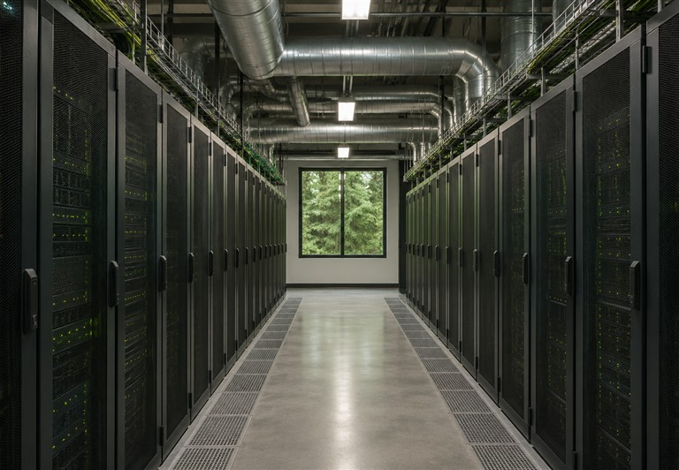

Classroom Projects
Classroom projects
My work in instructional design, curriculum development, and science learning through real-world investigations.
Project gallery

Real-world science learning
Travel Itinerary Project
Route planning, physics calculations, budgeting, and an Expo summary connect motion to everyday decisions.
- Instructional Design
- Project-Based Learning
- Quantitative Reasoning

Classroom project
Car Crash PSA Project
A guided crash-physics investigation leads into a PSA assignment, with reflection on the support needed for creative work.
- Instructional Scaffolding
- Scientific Reasoning
- Educational Technology

Physical Science investigation
The Cost of Intelligence: Can We Sustain AI?
An eight-page investigation uses research and calculations to examine AI’s electricity and water demands.
- Curriculum Development
- Research-Based Instruction
- Critical Thinking
Project covers are AI-generated illustrations. Student work is identified separately within the Travel Itinerary case study.